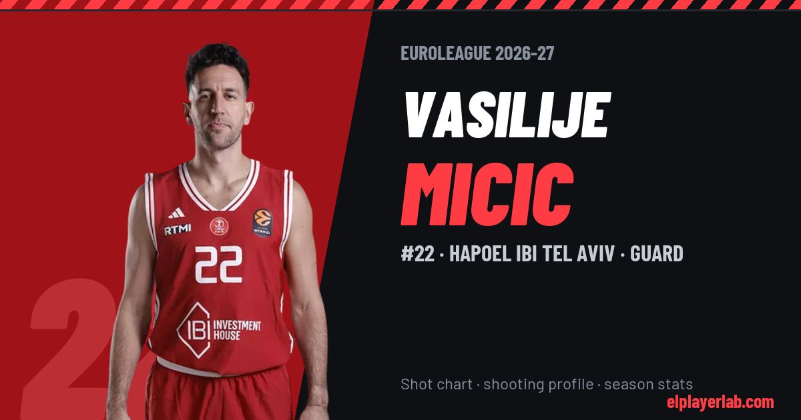

Hapoel IBI Tel Aviv · Euroleague 2026-27
Vasilije Micic
#22 · Guard · Hapoel IBI Tel Aviv · 2026-27 · 2 games · 12.5 pts · 4.0 reb · 3.5 ast a game

- Number
- 22
- Position
- Guard
- Height
- 196 cm
- Weight
- 92 kg
- Born
- 1994-01-13
- Country
- Serbia
Career
- Hapoel TLV 2025-2027
- Phoenix Suns (NBA) 2024-2025
- Charlotte Hornets (NBA) 2023-2024
- Oklahoma City Thunder (NBA) 2023-2024
- Anadolu Efes 2018-2023
- Žalgiris Kaunas 2017-2018
- Tofaş 2016-2017
- Crvena zvezda (loan) 2015-2016
- Bayern Munich 2014-2016
- Mega Vizura 2010-2014
Euroleague Player Lab: shot charts, shooting profiles and season stats for every player, rebuilt after every game.